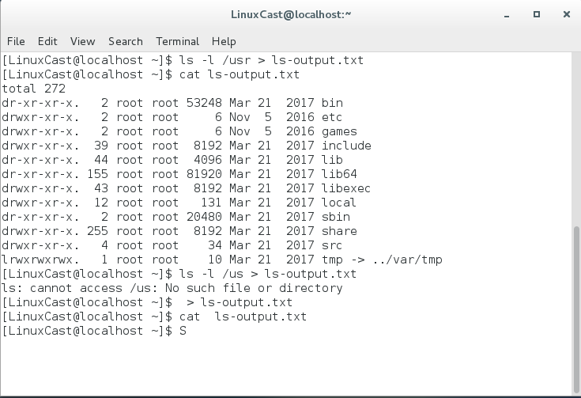

与 Unix 主题“任何东西都是一个文件”保持一致，程序，比方说 ls，实际上把他们的运行
结果输送到一个叫做标准输出的特殊文件（经常用 stdout 表示），而它们的状态信息则送到另
一个叫做标准错误的文件（stderr）。默认情况下，标准输出和标准错误都连接到屏幕，而不是
保存到磁盘文件。除此之外，许多程序从一个叫做标准输入（stdin）的设备得到输入，默认情
况下，标准输入连接到键盘。
标准输出默认是屏幕，标准输入默认是键盘
1、重定向标准输出
">"用于重定向标准 ，使用“>”来重定向标准输出时，目标文件总被重写（重新覆盖）
> ls-output.txt
所以可以使用以上命令行删除一个文件的内容，或者创建一个空文件
使用“>>”可以将重定向标准输出添加到文件内容之后

2、重定向标准错误
重定向标准错误缺乏专用的重定向操作符。重定向标准错误，我们必须参考它的文件描述
符。一个程序可以在几个编号的文件流中的任一个上产生输出。然而我们必须把这些文件流
的前三个看作标准输入，输出和错误，shell 内部参考它们为文件描述符 0，1 和 2，各自地。
shell 提供了一种表示法来重定向文件，使用文件描述符。因为标准错误和文件描述符 2 一样，
我们用这种表示法来重定向标准错误：

3、重定向标准输出和标准错误到同一文件
两种的方法：
① （shell版本）
ls -l /bin/usr > ls-output.txt 2>&1
首先重定向标准输出到ls-output.txt，然后将标准错误重定向到标准输出（顺序不能反）
② （bash版本）
ls -l /bin/usr &> ls-output.txt
使用单单一个表示法 &> 来重定向标准输出和错误到文件 ls-output.txt。
4、处理不必要的输出
通过重定向输出结果到一个特殊的叫做 “/dev/null” 的文件。这个文件是系统设备，叫做位存储桶，它可以接受输入，并且对输入不做任何处理。为了隐瞒命令错误信息，我们这样做：
ls -l /bin/usr 2> /dev/null
5、重定向标准输入
①、cat －连接文件， cat 命令读取一个或多个文件，然后复制它们到标准输出cat不跟任何文件参数，表示它会从标准输入读入数据。由于文件名参数的缺席，cat 复制标准输入到标准输出


6、管道线
comannd1 | comannd2
“|” 一个命令的标准输出可以通过管道到另一个命令的标准输入
ls -l/usr/bin | less
用less一页页的浏览任何命令的输出
7、过滤器
有可能会把几个命令放在一起组成一个管道线，通常，以这种方式使用的命令被称为过滤器

8、uniq 报道或忽略重复行
uniq -d --repeat 打印重复行
uniq 忽略重复行
9、wc 默认打印文件行、字和字节数
wc -l 只打印行数
10、grep -打印匹配行 （正则表达式）
grep 有－对方便的选项：“-i” 导致 grep 忽略大小写当执行搜索时（通常，搜索是大小写敏
感的），“-v” 选项会告诉 grep 只打印不匹配的行。
11、head、tail -打印文件开头部分、结尾部分
使用 “-f” 选项，tail 命令继续监测这个文件，当新的内容添加到文件后，它们会立即出现在屏幕上。这会一直继续下去直到你输入 Ctrl-c。

12、tee -从stdin中读取数据，并且输出到stdout和文件